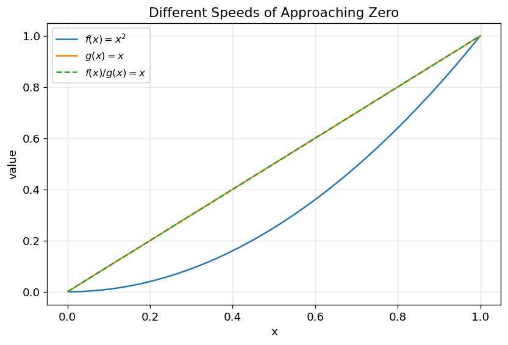
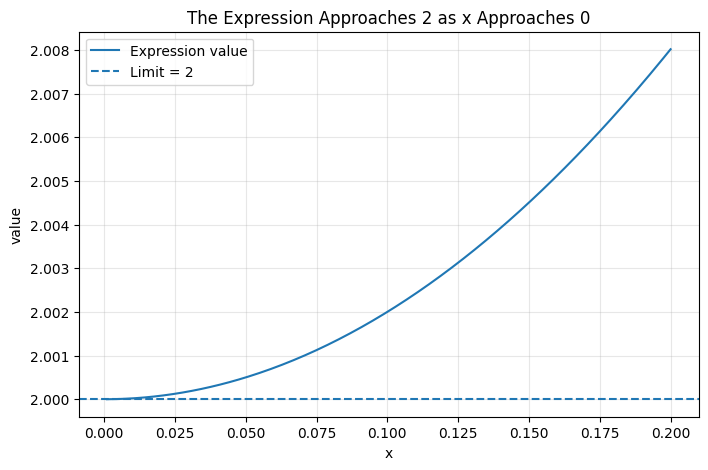
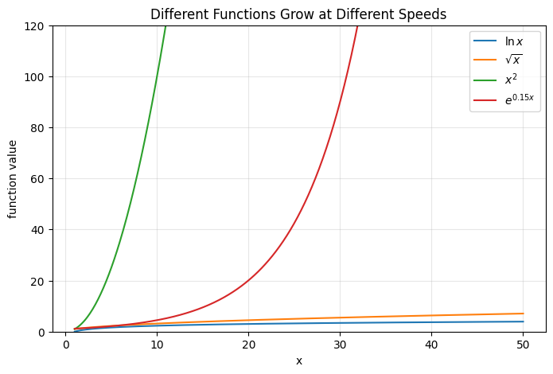

4. L’Hôpital’s Rule — A Practical Tool for Indeterminate Limits#
L’Hôpital’s Rule（洛必达法则）
4.1. Learning Objectives#
After reading this chapter, you should be able to:
Recognize indeterminate forms（未定式） such as 0/0 and ∞/∞.
Explain why direct substitution sometimes fails when evaluating limits.
State L’Hôpital’s Rule（洛必达法则） carefully and understand its conditions.
Apply the rule step by step to common limit problems.
Know when repeated use of L’Hôpital’s Rule is appropriate.
Avoid common mistakes, especially using the rule when the expression is not an indeterminate quotient.
Compare growth rates of common functions such as logarithmic, polynomial, and exponential functions.
5. Why This Topic Matters#
In calculus, many problems ask us to understand what happens to a function as \(x\) approaches a certain value.
For example:
or:
Sometimes we can evaluate a limit by direct substitution. But often, direct substitution produces expressions such as:
or:
These are not numbers. They are indeterminate forms（未定式）.
The word “indeterminate” means that the expression does not yet determine the final limit. Different functions can produce the same symbolic form but lead to different answers.
For example:
but:
and:
does not approach a finite number.
All three involve something like 0/0, but the results are different. Therefore, 0/0 itself does not tell us the answer.
L’Hôpital’s Rule gives us a systematic way to resolve many of these difficult limits.
5.1. 2. Big Picture Intuition#
Suppose we want to evaluate:
and both numerator and denominator approach 0:
Near \(x = c\), both functions are small. The key question is:
Which function approaches zero faster?
If \(f(x)\) goes to zero much faster than \(g(x)\), the ratio may go to 0.
If \(g(x)\) goes to zero much faster than \(f(x)\), the ratio may become very large.
If they shrink at similar rates, the ratio may approach a finite number.
L’Hôpital’s Rule says that, under suitable conditions, instead of comparing the original function values:
we can compare their local rates of change:
5.1.1. So the main intuition is:#
When both functions vanish or both grow without bound, their ratio is often governed by their relative rates of change.
This connects directly to the previous chapter on derivatives: derivative（导数） measures local change, and L’Hôpital’s Rule uses derivatives to evaluate limits.
5.2. 3. Formal Definition and Core Equation#
5.2.1. 3.1 Basic Form of L’Hôpital’s Rule#
Suppose:
and:
or suppose:
and:
If \(f\) and \(g\) are differentiable near \(c\), and \(g'(x) \ne 0\) near \(c\), then:
provided the limit on the right exists.
5.2.2. In words:#
If a quotient has the form 0/0 or ∞/∞, then under suitable conditions, we may differentiate the numerator and denominator separately and compute the new limit.
5.2.3. Important:#
L’Hôpital’s Rule is not saying that the derivative of a quotient equals the quotient of derivatives. It is only a rule for certain limits.
5.3. 3.2 What the Symbols Mean#
In:
\(f(x)\) is the numerator function
\(g(x)\) is the denominator function
\(c\) is the value that \(x\) approaches
\(f'(x)\) is the derivative of the numerator
\(g'(x)\) is the derivative of the denominator
The rule applies only when the original quotient has an indeterminate form such as 0/0 or ∞/∞
5.4. 4. How It Works Step by Step#
A safe workflow is:
Step 1: Try direct substitution.
Step 2: Check whether the result is 0/0 or ∞/∞.
Step 3: Differentiate numerator and denominator separately.
Step 4: Evaluate the new limit.
Step 5: If the new limit is still 0/0 or ∞/∞, repeat if conditions still hold.
Step 6: Stop when the limit becomes determinate.
This workflow matters because many mistakes come from using L’Hôpital’s Rule too early or using it on expressions where it does not apply.
5.5. 5. Core Mechanism: Why the Rule Makes Sense#
The rule may look surprising at first:
Why should this be reasonable?
Let us focus on the 0/0 case.
5.5.1. Suppose:#
Near \(x = c\), we can use local linear approximation（局部线性近似）:
Since \(f(c) = 0\), this becomes:
Similarly:
5.5.2. Therefore:#
Cancel the common factor:
So if both functions approach zero, their ratio near \(c\) is controlled by the ratio of their local linear parts.
This is the core intuition behind L’Hôpital’s Rule.
5.5.3. It says:#
When the original function values are both disappearing, compare how fast they are disappearing.
5.6. 6. Visual Explanation#
5.6.1. 6.1 What the Figure Should Show#
A useful figure for this chapter should compare two functions \(f(x)\) and \(g(x)\) that both approach 0 at \(x = 0\), but at different speeds.
5.6.2. For example:#
5.6.3. As \(x \to 0\):#
Both numerator and denominator approach 0, but \(x^2\) approaches 0 faster than \(x\).
Therefore, the ratio approaches 0.
5.6.4. Figure Demo 1: Two Functions Approaching Zero at Different Speeds#
import numpy as np
import matplotlib.pyplot as plt
plt.rcParams.update({
"font.size": 11,
"axes.titlesize": 13,
"axes.labelsize": 11,
"legend.fontsize": 10,
"figure.dpi": 120
})
x = np.linspace(0.001, 1, 400)
f = x**2
g = x
ratio = f / g
plt.figure(figsize=(8, 5))
plt.plot(x, f, label=r"$f(x)=x^2$")
plt.plot(x, g, label=r"$g(x)=x$")
plt.plot(x, ratio, "--", label=r"$f(x)/g(x)=x$")
plt.xlabel("x")
plt.ylabel("value")
plt.title("Different Speeds of Approaching Zero")
plt.legend()
plt.grid(True, alpha=0.3)
plt.show()

5.6.5. What this figure teaches:#
Even if both functions approach zero, their ratio depends on how fast they approach zero.
5.7. 7. Worked Toy Example#
Evaluate:
This is one of the example types from your notes.
5.8. Step 1: Direct substitution#
Numerator:
Denominator:
So the expression has form:
Therefore, L’Hôpital’s Rule may be used.
5.9. Step 2: First application#
Differentiate numerator:
Differentiate denominator:
So:
Direct substitution again:
Still:
Use L’Hôpital’s Rule again.
5.10. Step 3: Second application#
Differentiate numerator:
Differentiate denominator:
So:
Substitution:
Still:
Use L’Hôpital’s Rule one more time.
5.11. Step 4: Third application#
Differentiate numerator:
Differentiate denominator:
Thus:
Now substitute \(x = 0\):
Therefore:
5.12. 8. Python Lab#
In this lab, we numerically inspect the same limit:
We will evaluate the expression for smaller and smaller values of \(x\).
import numpy as np
import pandas as pd
def original_expression(x):
return (np.exp(x) - np.exp(-x) - 2*x) / (x - np.sin(x))
x_values = np.array([1e-1, 5e-2, 1e-2, 5e-3, 1e-3, 5e-4, 1e-4])
results = pd.DataFrame({
"x": x_values,
"expression value": original_expression(x_values)
})
print(results)
x expression value
0 0.1000 2.002001
1 0.0500 2.000500
2 0.0100 2.000020
3 0.0050 2.000005
4 0.0010 2.000000
5 0.0005 1.999995
6 0.0001 2.000268
Expected result:
As \(x\) becomes closer to 0, the expression value should move closer to:
5.12.1. Figure Demo 2: Numerical Convergence Toward the Limit#
import numpy as np
import matplotlib.pyplot as plt
def original_expression(x):
return (np.exp(x) - np.exp(-x) - 2*x) / (x - np.sin(x))
x_values = np.linspace(0.001, 0.2, 300)
y_values = original_expression(x_values)
plt.figure(figsize=(8, 5))
plt.plot(x_values, y_values, label="Expression value")
plt.axhline(2, linestyle="--", label="Limit = 2")
plt.xlabel("x")
plt.ylabel("value")
plt.title("The Expression Approaches 2 as x Approaches 0")
plt.legend()
plt.grid(True, alpha=0.3)
plt.show()

5.12.2. What this figure teaches:#
The graph gives numerical evidence that the expression approaches 2 as x→0. It does not replace the symbolic proof, but it supports our interpretation.
5.13. Another Important Example: Logarithm vs Polynomial#
Evaluate:
where:
As \(x \to \infty\):
and:
So the expression has form:
Use L’Hôpital’s Rule.
Differentiate numerator:
Differentiate denominator:
Therefore:
Simplify:
Thus:
So:
Interpretation:
Any positive power function \(x^n\) grows faster than \(\ln x\).
This is a major growth-rate result.
5.13.1. Figure Demo 3: Logarithmic Growth vs Polynomial Growth#
import numpy as np
import matplotlib.pyplot as plt
x = np.linspace(1, 50, 500)
log_x = np.log(x)
sqrt_x = np.sqrt(x)
x_power = x**2
exp_x = np.exp(0.15 * x)
plt.figure(figsize=(8, 5))
plt.plot(x, log_x, label=r"$\ln x$")
plt.plot(x, sqrt_x, label=r"$\sqrt{x}$")
plt.plot(x, x_power, label=r"$x^2$")
plt.plot(x, exp_x, label=r"$e^{0.15x}$")
plt.ylim(0, 120)
plt.xlabel("x")
plt.ylabel("function value")
plt.title("Different Functions Grow at Different Speeds")
plt.legend()
plt.grid(True, alpha=0.3)
plt.show()

5.13.2. What this figure teaches:#
Logarithmic functions grow very slowly.
Polynomial functions grow faster.
Exponential functions eventually dominate polynomial functions.
5.14. Handling Other Indeterminate Forms#
L’Hôpital’s Rule directly applies to:
and:
But other indeterminate forms can often be transformed into quotients.
Common indeterminate forms include:
The strategy is:
Convert the expression into a quotient.
Then check whether it becomes \(0/0\) or \(\frac{\infty}{\infty}\).
Then apply L’Hôpital’s Rule if valid.
5.14.1. Example: Evaluating \(x^x\) as \(x \to 0^+\)#
Evaluate:
This example type also appears in your notes.
The form is:
which is indeterminate.
Let:
Take natural logarithm:
Now evaluate:
Rewrite it as a quotient:
As \(x \to 0^+\):
and:
So this is an \(\infty / \infty\)-type expression in magnitude.
Apply L’Hôpital’s Rule:
Simplify:
Therefore:
Since:
we have:
Thus:
5.15. How to Interpret the Results#
5.15.1. A Limit Is About Behavior, Not Just Substitution#
When direct substitution gives:
or:
we have not found the answer. We have only found that direct substitution is insufficient.
The actual limit depends on relative growth or relative shrinkage.
5.15.2. L’Hôpital’s Rule Compares Local Rates#
For:
L’Hôpital’s Rule changes the question from:
How do the function values compare?
to:
How do their derivatives compare?
This works because derivatives describe local behavior.
5.15.3. Repeated Application Means Higher-Order Behavior Matters#
Sometimes one application still produces:
This means the first-order behavior of numerator and denominator is still not enough to distinguish them.
Repeated application compares higher-order behavior.
For example, in the worked example:
we needed repeated differentiation before the limit became determinate.
5.16. Common Pitfalls and Misunderstandings#
5.16.1. Pitfall 1: Applying the Rule Before Checking the Form#
You must first verify that the expression is:
or:
For example:
Direct substitution gives:
This is already determinate. Do not use L’Hôpital’s Rule.
5.16.2. Pitfall 2: Differentiating the Quotient Instead of Numerator and Denominator Separately#
L’Hôpital’s Rule says:
It does not say:
Use separate derivatives.
5.16.3. Pitfall 3: Forgetting That the New Limit Must Exist#
If:
does not exist, then L’Hôpital’s Rule does not automatically give the original limit.
The rule is useful only when the derivative quotient has a limit.
5.16.4. Pitfall 4: Using the Rule on Non-Quotient Forms Without Transformation#
For forms like:
or:
you must first transform the expression into a quotient.
5.16.5. Pitfall 5: Ignoring One-Sided Domains#
For expressions involving:
or:
the domain may require:
So the limit should often be written as:
not simply:
5.18. Practical Advice#
Use this checklist when solving a limit with L’Hôpital’s Rule:
Try direct substitution.
Confirm the expression is 0/0 or ∞/∞.
Differentiate numerator and denominator separately.
Substitute again.
Repeat only if the new expression is still indeterminate.
Stop when the limit is determinate.
Interpret the result as relative local growth or shrinkage.
For difficult problems, consider using Taylor expansion. Many L’Hôpital problems can also be understood as comparing leading-order terms.
For example:
and:
These approximations often explain why repeated L’Hôpital’s Rule works.
5.19. Summary#
L’Hôpital’s Rule is a method for evaluating limits of indeterminate quotients.
It applies mainly to:
and:
The central formula is:
when the required conditions hold and the derivative quotient limit exists.
The core intuition is:
If two functions both vanish or both grow without bound, compare their rates of change.
The main limitation is that the rule only applies under specific conditions. Always check the indeterminate form first.
5.20. Quiz#
5.20.1. Conceptual Questions#
Q1: Which forms directly allow the use of L’Hôpital’s Rule?
A. \(0/1\) and \(1/0\)
B. \(0/0\) and \(\infty/\infty\)
C. \(1^\infty\) and \(0^0\), without transformation
D. Any limit involving a quotient
Answer
Correct answer: B
L’Hôpital’s Rule directly applies to indeterminate quotient forms \(0/0\) and \(\infty/\infty\).
Q2: What is the main idea behind L’Hôpital’s Rule?
A. Replace every function by its square
B. Compare areas under two curves
C. Compare the derivatives of numerator and denominator
D. Convert every limit into an integral
Answer
Correct answer: C.
The rule evaluates certain quotient limits by comparing local rates of change.
Q3: Why is \(0/0\) called an indeterminate form?
A. Because it always equals \(0\)
B. Because it always equals \(1\)
C. Because different functions can produce \(0/0\) but have different limits
D. Because it means the limit does not exist
Answer
Correct answer: C
The symbolic form \(0/0\) alone does not determine the value of the limit.
Q4: What must you do before applying L’Hôpital’s Rule to \(0 \cdot \infty\)?
A. Differentiate immediately
B. Convert it into a quotient form
C. Replace it with zero
D. Replace it with infinity
Answer
Correct answer: B.
L’Hôpital’s Rule applies to quotient forms, so \(0 \cdot \infty\) must first be rewritten as a quotient.
Q5: Which statement is correct?
A. L’Hôpital’s Rule says \((f/g)' = f'/g'\).
B. L’Hôpital’s Rule is only about limits, not quotient derivatives.
C. L’Hôpital’s Rule can be applied to every quotient.
D. L’Hôpital’s Rule never requires checking conditions.
Answer
Correct answer: B.
The rule is about limits of certain quotient forms. It does not replace the quotient rule for derivatives.
5.21. Applied Questions#
Q6: Evaluate
A. \(0\)
B. \(1\)
C. \(\infty\)
D. Does not exist
Answer
Correct answer: B.
Direct substitution gives \(0/0\). Apply L’Hôpital’s Rule:
Q7: Evaluate
A. \(0\)
B. \(1\)
C. \(\infty\)
D. \(-1\)
Answer
Correct answer: A.
The expression has form \(\infty/\infty\). Apply L’Hôpital’s Rule:
5.22. Explain in Your Own Words#
Q8: Explain why L’Hôpital’s Rule is connected to the idea of local linear approximation.
Answer
When two functions both approach zero near a point, each function can be approximated by its tangent line.
The numerator behaves like \(f'(c)(x-c)\), and the denominator behaves like \(g'(c)(x-c)\). Their ratio is therefore approximately \(f'(c)/g'(c)\). This is why comparing derivatives can reveal the original limit.